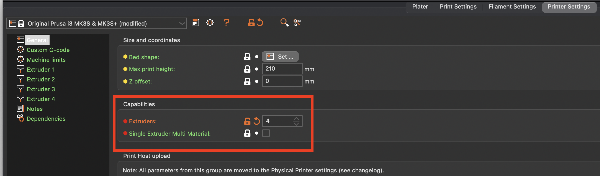
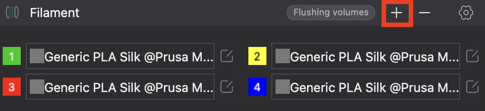
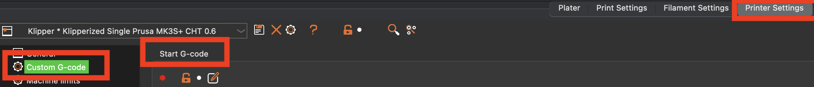
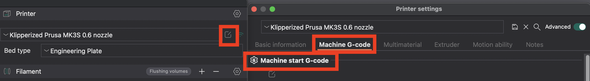
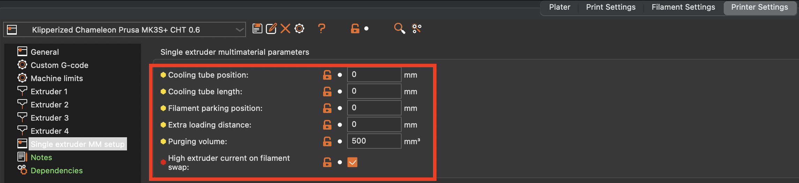
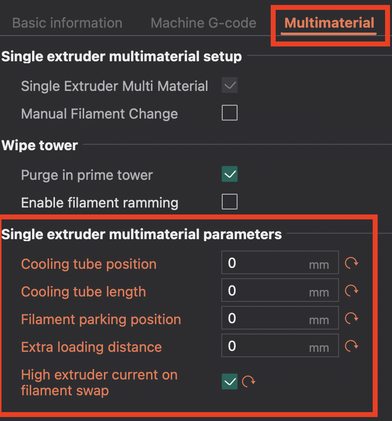
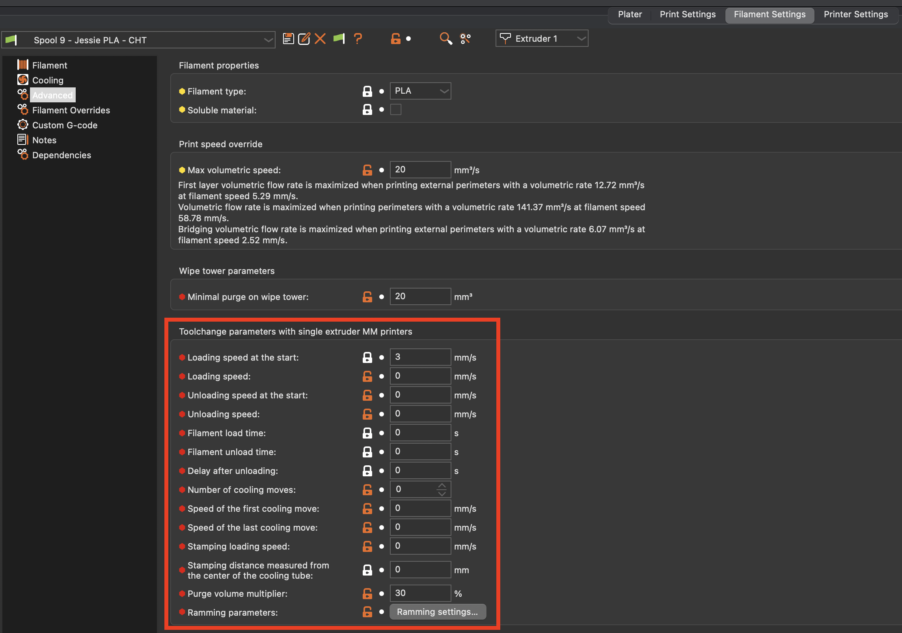
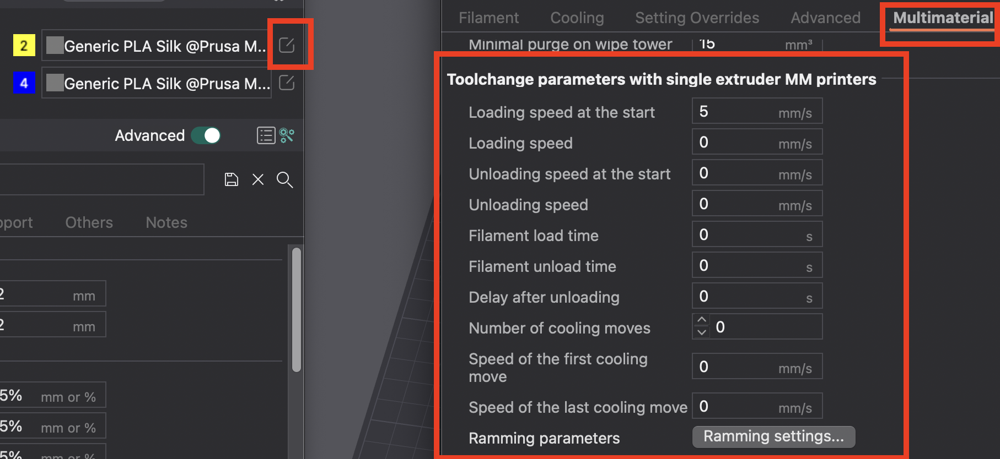
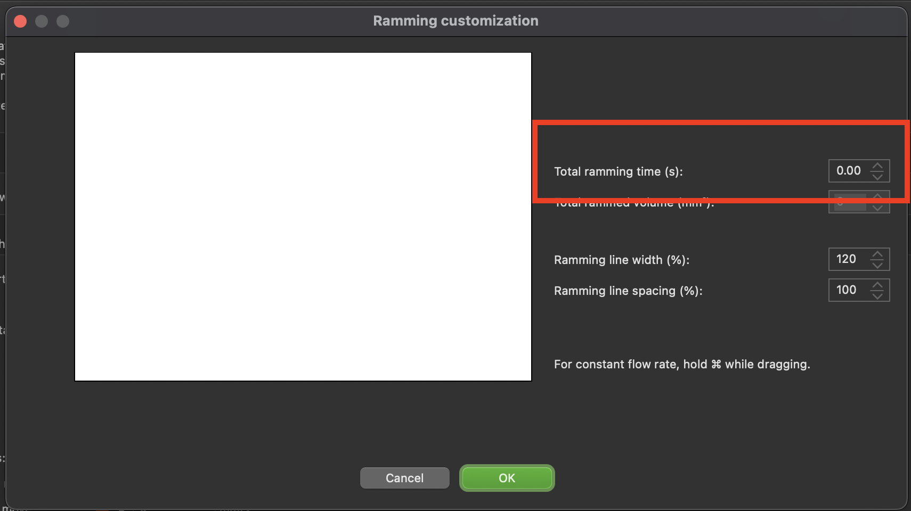

Slicer Setup
This guide will explain how to setup PrusaSlicer and OrcaSlicer with this plugin, optomizing some settings for this plugin.
Klipper macros
Before the full slicer setup begins, the following changes need to be made to your PRINT_START and PRINT_END Klipper macros.
In your PRINT_START macro, add the following BEFORE your purge line:
RESET_CHAMELEON
G4 P1000
PULSE_CHAMELEON PULSES=7
G4 P1000
PULSE_CHAMELEON PULSES={params.INITIAL_EXTRUDER+1}
LOAD_CHAMELEON
SET_CHAMELEON_STATE P={params.INITIAL_EXTRUDER} L=-1
G1 E65 F1000; Change this to your extruder to hotend distance
In your PRINT_END macro, add the following BEFORE your printer cools down:
{% set saved = printer.save_variables.variables %}
{% set p = saved.prev_ext %}
QUICK_TIP_SHAPING MOVES=3; change this to however any moves works for your filaments
PULSE_CHAMELEON PULSES=6
UNLOAD_CHAMELEON TOOL={p}
PrusaSlicer and OrcaSlicer
The same settings shown here MAY work with SuperSlicer, BambuStudio, and other PrusaSlicer forks.
Set number of extruders
To begin slicer setup, we need to configure the slicer so that it can use four extruders.
For PrusaSlicer, go to Printer Settings -> General -> Capabilities -> Extruders, and set it to 4
2. Enable the Single Extruder Multi Material checkbox

NOTE that while this screenshot shows the Single Extruer Multi Material checkbox UNCHECKED, it should be CHECKED.
For OrcaSlicer, on the left panel, in the filament section, click the + button until four filaments are shown

Pass parameters to PRINT_START
To use the modified PRINT_START macro from before, we need to pass the INITIAL_EXTRUDER parameter to the macro.
In PrusaSlicer, go to Printer Settings -> Custom G-Code -> Start G-Code

In OrcaSlicer, go to Printer Settings -> Machine G-Code -> Machine start G-Code

Edit the contents of the start print GCode as follows:
PRINT_START other parameters... INITIAL_EXTRUDER=[initial_extruder]
Toolchange GCode
To successfully run a toolchange, the slicer's toolchange GCode needs to be changed. In the same panel as in the previous step, navigate to the toolchange GCode.
In PrusaSlicer, it is called Tool Change G-Code
In OrcaSlicer, it is called Change filament G-Code
Replace the existing contents (if there are any) with:
SET_CHAMELEON_STATE L={layer_num}
{if previous_extruder > -1}
QUICK_TIP_SHAPING MOVES=[filament_loading_speed_start[previous_extruder]]
{endif}
T{next_extruder}
SET_CHAMELEON_STATE P={next_extruder}
Printer Tip Shaping
This plugin (and the 3DChameleon) have their own custom tip shaping algorithms. To use them, the slicer's tip shaping must be disabled.
In PrusaSlicer, navigate to Printer Settings -> Single Extruder MM Setup

In OrcaSlicer, navigate to Printer Settings -> Multimaterial -> Single extruder multimaterial parameters

Set all the fields EXCEPT Purging Volume (PrusaSlicer only) to 0. Optionally, enable High extruder current on filament swap
Filament Tip Shaping
The final step of slicer setup is disabling the filament-specific tip shaping settings.
These changes will need to be repeated for ALL your filament settings
In PrusaSlicer, go to Filament Settings -> Advanced -> Toolchange Parameters with single extruder MM printers.

In OrcaSlicer, go to Filament Settings -> Multimaterial -> Toolchange parameters with single parameter MM printers.

Set all the values to 0 EXCEPT Purge Volume Multiplier (PrusaSlicer only).
Click the Ramming settings... button, and set the Total ramming time (s) to 0, then hit OK
